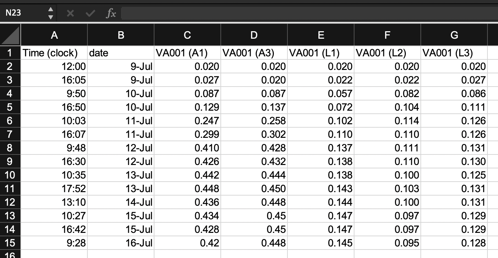

2.5 Example: Creating a template for “tidy” data collection
We will walk through an example of creating a template to collect data in a “tidy” format for a laboratory-based research project, based on a research project on drug efficacy in murine tuberculosis models. We will show the initial “untidy” format for data recording and show how we converted it to a “tidy” format. Finally, we will show how the data can then easily be analyzed and visualized using reproducible tools.
Objectives. After this module, the trainee will be able to:
- Understand how the principles of “tidy” data can be applied for a real, complex research project;
- List advantages of the “tidy” data format for the example project
In the last module, we covered three principles for designing tidy templates for data collection in a biomedical laboratory, motivated by an example dataset from a real experiment. In this module, we’ll show you how to apply those principles to create a tidier template for the example dataset from the last module. As a reminder, those three principles are:
- Limit the template to the collection of data.
- Make sensible choices when dividing data collection into rows and columns.
- Avoid characters or formatting that will make it hard for a computer program to process the data.
It is important to note that there’s no reason that you can’t continue to use a spreadsheet program like Excel or Google Sheets to collect data. The spreadsheet program itself can easily be used to create a simple template to use as you collect data. In fact, we’ll continue using a spreadsheet format in the rest of this module and in the next one as we show how to redesign the data collection for this example experiment. It is important, however, to think through how you will arrange that template spreadsheet to make it most useful in the larger context of reproducible research.
2.5.1 Example data—Data on rate of bacterial growth
Here, we’ll walk through an example using real data collected in a laboratory experiment. We described these data in detail in the previous module. As a reminder, they were collected to measure the growth rate of Mycobacteria tuberculosis under two conditions—high oxygen and low oxygen. They were collected from five test tubes that were measured regularly over one week for bacteria growth using a measure of optical density. Figure 2.11 shows the original template that the research group used to record these data.

Figure 2.11: Example of an Excel spreadsheet used to record and analyze data for a laboratory experiment. Annotations highlight where data is entered by hand, where calculations are done by hand, and where embedded Excel formulas are used. The figures are created automatically using values in a specified column.
In the previous module, we described features that make this template “untidy” and potentially problematic to include in a larger pipeline of reproducible research. In the next few sections of this module, we’ll walk step-by-step through changes that you could make to make this template tidier. We’ll finish the module by showing how you could then easily design a further step of the analysis pipeline to visualize and analyze the collected data, so that the advantages of real-time plotting from the more complex spreadsheet are not missed when moving to a tidier template.
2.5.2 Limiting the template to the collection of data
The example template (Figure 2.11) includes a number of “extra” elements beyond simple data collection—all the elements outside rows 1–15 of columns A–I. Outside this area of the original spread, there are a number of extra elements, including plots that visualize the data, summaries generated based on the data (rows 16–18, for example), notes about the data, and even a macro (top right) that wasn’t involved in data collection but instead was used by the researcher to calculate the initial volume of inoculum to include in each test tube. None of these “extras” can be easily read into a statistical program like R or Python—at best, they will be ignored by the program. They can even complicate reading in the cells with measurements (rows 1–15 of columns A–I), as most statistical programs will try to read in all the non-empty cells of a spreadsheet unless directed otherwise.
A good starting point, then, would be to start designing a tidy data collection template for this experiment by extracting only the content from the box in Figure 2.2. This would result in a template that looks like Figure 2.12.
Figure 2.12: First step in designing a tidy data collection template for the example project. A template has been created that focuses only on the raw data, removing all extra elements like plots, notes, macros, and summaries.
Notice that we’ve also removed any of the color formatting from the spreadsheet. It is fine to keep color in the spreadsheet if it will help the research to find the right spot to record data while working in the laboratory, but you should make sure that you’re not using it to encode information about the data—all color formatting will be ignored when the data are read by a statistical program like R.
While the template shown in Figure 2.12 has removed a lot of the calculated values from the original template, it has not removed all of them. Two of the columns are still values that were determined by calculation after the original data were collected. Column B and column D both provide measures of the length of time since the start of the experiment, and both are calculated by comparing a measurement time to the time at the start of the experiment.
The time since the start of the experiment can easily be calculated later in the analysis pipeline, once you read the data into a statistical program like R. By delaying this step, you can both simplify the data collection template (requiring fewer columns for the research in the laboratory to fill out) and also avoid the chance for mistakes, which could occur both in the hand calculations of these values and in data entry, when the researcher enters the results of the calculations in the spreadsheet cell. Figure 2.13 shows a new version of the template, where these calculated columns have been removed. This template is now restricted to only data points originally collected in the course of the experiment, and has removed all elements that are based on calculations or other derivatives of those original, raw data points.
Figure 2.13: Second step in designing a tidy data collection template for the example project. This template started from the previous one, but removed columns that were hand-calculated and then entered by the researcher in the previous template. This version has removed all calculated values on the template, limiting it to only the original recorded values required for the experiment.
2.5.3 Making sensible choices about rows and columns
The second principle is to make sensible choices when dividing data collection into rows and columns. There are many different ways that you could spread the data collection into rows and columns, and in this step, you can consider which method would meet a reasonable balance between making the template easy for the researcher in the laboratory to use to record data and also making the resulting data file easy to incorporate in a reproducible data analysis pipeline.
For the example experiment, Figure 2.2 shows three examples that we can consider for how to arrange data collection across rows and columns. All three build on the changes we made in the earlier step of “tidying” the template, which resulted in the template shown in Figure 2.13.
![Examples of ways that data collection could be divided into rows and columns in the example template. Panel A shows an example where date and time are recorded in different columns. Panel B is similar to Panel A, but in this case, date and time are recorded in a single column. Panel C shows a classically 'tidy' data format, where each measurement date-time is repeated for each of the five test tubes, and columns give the test tube ID and absorbance measurement at that time for that tube (only part of the data is shown for this format, while remaining rows are off the page). While Panel C provides the 'tidiest' format, it may have some practical constraints when used in a laboratory setting. For example, it would require more data entry during data collection (since date-time is entered five times at each measurement time), and its long format prevent it all from being seen at once without scrolling on a computer screen.](figures/growth_curve_column_options.png)
Figure 2.14: Examples of ways that data collection could be divided into rows and columns in the example template. Panel A shows an example where date and time are recorded in different columns. Panel B is similar to Panel A, but in this case, date and time are recorded in a single column. Panel C shows a classically ‘tidy’ data format, where each measurement date-time is repeated for each of the five test tubes, and columns give the test tube ID and absorbance measurement at that time for that tube (only part of the data is shown for this format, while remaining rows are off the page). While Panel C provides the ‘tidiest’ format, it may have some practical constraints when used in a laboratory setting. For example, it would require more data entry during data collection (since date-time is entered five times at each measurement time), and its long format prevent it all from being seen at once without scrolling on a computer screen.
Panel A (an exact repeat of the template shown in Figure 2.13) shows an example where date and time are recorded in different columns. Panel B is similar to Panel A, but in this case, date and time are recorded in a single column. Panel C shows a classically “tidy” data format, where each measurement’s date-time is repeated for each of the five test tubes, and columns give the test tube ID and absorbance measurement at that time for that tube (only part of the data is shown for this format, while remaining rows are off the page).
In this example, the template that may be the most reasonable is the one shown in Panel B. While Panel C provides the “tidiest” format, it has some practical constraints when used in a laboratory setting. For example, it would require more data entry during data collection (since date-time is entered five times at each measurement time), and its long format prevent it all from being seen at once without scrolling on a computer screen. When comparing Panels A and B, the template in Panel B has an advantage. The information on date and time are useful together, but not individually. For example, to calculate the time since the start of the experiment, you cannot just calculate the difference in dates or just the difference in times, but instead must consider both the date and time of the measurement in comparison to the date and time of the start of the experiment. As a result, at some point in the data analysis pipeline, you’ll need to combine information about the date and the time to make use of the two elements. While this combination of two columns can be easily done within a statistical program like R, it can also be directly designed into the original template for collecting the data. Therefore, unless there is a practical reason why it would be easier for the researcher to enter date and time separately, the template shown in Panel B is preferable to that shown in Panel A in terms of allowing for the “tidy” collection of research data into a file that is easy to include in a reproducible pipeline. Figure 2.15 shows the template design at this stage in the process of tidying it, highlighting the column that combines date and time elements in a single column. In this version of the template, we’ve also been careful about how date and time are recorded, a consideration that we’ll discuss more in the next section.
Figure 2.15: Third step in designing a tidy data collection template for the example project. This template started from the previous one, but combined collection of the date and time of the measurement into a single column and revised the format to include all date elements and to prevent automatic conversion by the spreadsheet program.
2.5.4 Avoiding problematic characters or formatting
The third principle is to avoid characters or formatting that will make it hard for a computer program to process the data. There are a number of special characters and formatting conventions that can be hard for a statistical program to handle. In the example template shown in Figure 2.15, for example, the column names include spaces (for example, in “Date and time”), as well as parentheses (for example, in “VA 001 (A1)”). While most statistical programs have tools that allow you to handle and convert these characters once the data are read in, it’s even simpler to use simpler column names in the original data collection template, and this will save some extra coding further along in the analysis pipeline. Two general rules for creating easy-to-use column names in a data collection template are: (1) start each column name with a letter and (2) for the rest of the column name, use only letters, numbers, or the underscore character (“_“). For example,”aerated1” would work well, but “1–aerated” would not.
Within the cell values below the column names, there is more flexibility. For example, if you have a column that gives the IDs of different samples, it would be fine to include spaces and other characters in those IDs.
There are a few exceptions, however. A big one is with values that record dates or date-time combinations. First, it is important to include all elements of the date (or date and time, if both are recorded). For example, the year should be included in the recorded date, even if the experiment only took a few days. This is because statistical programs have excellent functions for working with data that are dates or date-times, but to take advantage of these, the data must be converted into a special class in the program, and conversion to that class requires specific elements (for example, a date must include the year, month, and day of month).
Second, it is useful to avoid recording dates and date-times in a way that results in a spreadsheet program automatically converting them. Surrounding the information about a date in quotation marks when entering it (as shown in Figure 2.15) can avoid this.
Finally, consider using a format to record the date that is unambiguous and so less likely to have recording errors. Dates, for example, are sometimes recorded using only numbers—for example, the first date of “July 9, 2019” in the example data could be recorded as “7/9/2019” or “7/9/19”, to be even more concise. However, this format has some ambiguity. It can be unclear if this refers to July 9 or to September 7, both of which could be written as “7/9”. For the version that uses two digits for the year, it can be unclear if the date is for 2019 or 1919 (or any other century). Using the format “July 9, 2019”, as done in the latest version of the sample template, avoids this potential ambiguity.
Figure 2.16 shows the template for the example experiment after the column names have been revised to avoid any problematic characters. This template is now in a very useful format for a reproducible research pipeline—the data collected using this template can be very easily read into and processed using further statistical programs like R or Python.
Figure 2.16: Example of an simpler format that can be used to record and analyze data for the same laboratory experiment as the previous figure. Annotations highlight where data is entered by hand. No calculations are conducted or figures created—these are all done later, using a code script.

2.5.5 Separating data analysis from data collection
Once you have created a “tidy” template for collecting your data in the laboratory, you can create a report template that will input that data and then provide summaries and visualizations. This allows you to separate the steps (and files) for collecting data from those for analyzing data. Figure 2.17 shows an example of a report template that could be created to pair with the data collection template shown in Figure 2.16.

Figure 2.17: Examples of an automated report that can be created to quickly generate summaries and estimates of the data collected in the simplified data collection template for the example experiment.
To create a report template like this, you can use tools for reproducible reports from statistical programs like R and Python. In this section, we will give an overview of how you could create the report template shown in Figure 2.17.
This report is written using a framework called RMarkdown, which allows you to include executable code inside a nicely-formatted document, resulting in a document in Word, PDF, or HTML that is easy for humans to read while also generating results based on R code. We will cover this format in details in modules 3.7–3.9. In the rest of this section, we’ll walk through some of the R code that is “powering” the analysis in this document, but if you’d like to learn how to combine it into an RMarkdown document to create the report shown in Figure 2.17, you can learn much more about RMarkdown in those later modules. The code within the report uses the R language. We’ll cover a few examples here, but if you would like to use R, you’ll find it helpful to learn more. Numerous excellent (and free) resources exist to help learn R. One of the best is the book “R for Data Science” by Hadley Wickham and Garrett Grolemund. It is available in print, as well as free online at https://r4ds.had.co.nz/.
The code used to generate the results in Figure 2.17 is all in the programming language R. A programming language can seem, at first glance, much more difficult to learn and use than using a spreadsheet program like Excel to set up formulae and macros. However, languages like R have evolved substantially in recent years to allow for much more straightforward coding than you may have seen in the past, and the barrier to learning to use them for straightforward data management and analysis is not much higher than the effort required to become proficient in using a spreadsheet program. To demonstrate this, let’s look through a few of the tasks required to generate the results shown in Figure 2.17. We won’t cover all the code, just highlight some of the key steps. If you’d like to look in details over the code and the output document, you can download those files and explore them: you can access the file for the Rmarkdown file, and you can download the output PDF. If you’d like to try out the code in the Rmarkdown file, you’ll also need the example data, which you can download by clicking here.
One key step is to read the collected data into R. When you use a spreadsheet
for both data collection and analysis, you don’t need to read the data to start
working with them, since everything is saved in the same file. Once you separate
the steps of data collection and data analysis, however, you do need to take an
extra step to read the data file into another program for analysis. Fortunately,
this is very simple in R. The data in this example are recorded using an Excel
spreadsheet, and there is a simple function in R that lets you read data in from
this type of spreadsheet (Figure 2.18). After this step of
code, you will have an object in R called growth_data, which contains the data
in a two-dimensional form very similar to how it is recorded in the spreadsheet
(this type of object in R is called a dataframe).
Figure 2.18: Code to read data from the data collection template into R for cleaning, analysis, and visualization. The data were recorded in the tidy data collection template described earlier in this module. Here, those data are read into R (code shown at top). The resulting data in R are stored in a format that is very similar to the design of a spreadsheet, with rows for observations and columns for the values recorded for each observation (bottom).
Another key step is to calculate, for each observation, the time since the start of the experiment. In the original data collection template shown in Figure 2.11, this calculation was done by hand by the researcher and entered into the spreadsheet. When we converted the spreadsheet to a tidier version, we took out all steps that involved calculations with the data, and instead limited the data collection to only raw, observed values. This helps us avoid errors and typos—instead of having the researcher calculate the difference in time as they are running the experiment, they can just record the time, and we can write code in the analysis document that handles the further calculations, using well-designed and well-tested tools to do this calculation.
Figure 2.19 shows code that can be used for this
calculation. At the start of this code, the data are stored in an object named
growth_data. The mutate function adds a column to the data, named
sampling_delta_time, that will give the difference between the time of an
observation and the start of the experiment. Within the mutate call, a special
function named difftime calculates the difference in two time points. This
function lets us specify the time units we’d like to use, and here we can pick
"hours" for the units. The first function lets us pull out the first value
in the data for a recorded time—in other words, the time when the experiment
started. This lets us compare each observation time to the time of the start of
the experiment. The result of this code is a new version of the growth_data
dataframe, with a new column giving time since the start of the experiment:
Figure 2.19: Code to add a column to the data that gives the time since the start of the experiment. This code (top) uses the time recorded for each experiment and compares it to the first recorded time, at the start of the experiment. This determines the time since the start of the experiment for each observation, given in a new column in the data (bottom).
Another key step is to plot results from the data. In R, there is a package
called ggplot2 that provides tools for visualization. The tools in this
package work by building a plot using “layers”, adding on small elements
line by line through simple functions that each do one simple thing.
While the resulting code can be long, each step is simple, and so it
becomes simple to learn these different “layers” and learn how to combine
them to create complex plots.
Figure 2.20 walks through the code for one of the
visualizations in the report. At this point in the report code, the data have
been reformatted into an object called growth_data_tidy, which has columns for
each observation on the time since the start of the experiment
(sampling_delta_time), the measured optical density (optical_density),
whether the tube was aerated or low oxygen (growth_conditions), and a short ID
for the test tube (short_tube_id). The code starts by creating a plot object,
specifying that in this plot the color will show the growth conditions, the
position on the x-axis will show the time since the start of the experiment, and
the y-axis will show the optical density. Layers are then added to this plot
object that add points and lines to the plot based on these mappings, and for
the lines, it’s further specified that the type of line should show the test
tube ID (for example, one tube will be shown with a dotted line, another with a
dashed line). Further layers are added to customize the scale labels with
labs, including the labels for the x-axis and y-axis and the legends of the
color and linetype scales. Another layer is used to customize the appearance of
the plot—things like the background color and the font used—and another
layer is added to use a log-10 scale for the x-axis.
Figure 2.20: Code to plot growth curves from the data. When the plotting code is run, the data have been transformed into a ‘tidy’ format (top), with columns that include the time since the start of the experiment, a test tube ID, the growth condition for the test tube, and the optical density measured in that test tube. The code (middle) add layers to implement each element of the plot based on this input data. The final plot is shown at the bottom.
While this looks like a lot of code, the process isn’t any longer than it would be to customize elements of a plot in a spreadsheet program. The advantages of the coded approach are that you maintain a full record of all the steps you took to customize the plot. This is something that you can use to reproduce your plot later, or even to use as a starting point for creating a similar plot with new data.
The next key step that we’d like to point out is how you can write and use small functions to do customized tasks for the experimental data. As one example, for the data in this example, we want to estimate doubling times based on the observed data. The principal investigator has decided that we should do this based on comparing bacteria levels at two times points—the measured time that is closest to 65 hours after the start of the experiment, and the time that is closest to 24 hours after the start of the experiment.
In the original data collection template—where the data were both recorded and analyzed in a spreadsheet—this step was done by hand by the researcher, looking through the data and selecting the cell closest to each of these times, and then connecting that cell to a spreadsheet formula calculation to calculate the doubling time. We can make this process more rigorous and less prone to error by writing a small function that does the same thing, then using that function to automate the process of identifying the relevant observations to use in calculating the doubling rate.
Figure 2.21 shows how you can write and then use a small
function in R. This function will input your growth_data dataset, as well as a
time that you are aiming for, and will output the sampling time in the data that
is closest to—while not larger than—that time. It does that in a few steps
within the body of the function. First, the code in the function filters to only
observations earlier than the target time. Then it measures the difference
between each of the times for these observations and the target time, and uses
this to identify the observation with the closest time to the target. It pulls
out the time of this observation and returns it.
Figure 2.21: Code to create and apply a small function. The code at the top can be used to create a function that can input your dataframe and determine the observation time in that data that is closest to (without being larger than) a target time. The function does this through a series of small steps. This function can then be applied to find the observation time in the data that is closest to specific target times, like 24 hours and 64 hours (bottom).
Small functions like this can easily be reused in other code for your research group. By writing the logic of the step out as a function—rather than redoing the steps by hand or step-by-step each time you need to do it—you can save time later, and in return, you have extra time that you can spend in writing the original function and carefully checking to make sure that it works correctly.
Finally, many of these steps require extensions to base R. When you download R,
you are getting a base set of tools. Many people have developed helpful
extensions that build on this base. These are stored and shared in what are
called R packages. You can install these extra packages for free, and you
use the library function in R to load a package you’ve installed, giving you
access to the extra functions that it provides. Figure
2.22 shows the spot in the Rmarkdown code where we
loaded packages we needed for this report. These include packages with functions
to read data in R from Excel (the readxl) package, as well as a suite of
packages with tools for cleaning and visualizing data (the tidyverse package).
In later modules, we’ll talk some more about R coding tools that you might find
useful for working with biomedical data, including the tools in the powerful and
popular tidyverse suite of packages.
Figure 2.22: Code to load packages with additional functionality. These provide functions that are not offered in base R, but that are useful in working with the example data. They include packages with functions for reading in data from an Excel file, as well as packages with functions for cleaning and visualizing data.
Overall, you can see that the code in this document provides a step-by-step recipe that documents all the calculations and cleaning that we do with the data, as well as how we create the plots. This code runs every time we create the report shown in Figure 2.17, and it gives us a good starting point if we run additional experiments that generate similar data.
2.5.6 Applied exercise
The Rmarkdown document includes a number of other steps, and you might find it interesting to download the document and the example data and walk through them to get a feel for the process. All the steps are documented in the Rmarkdown document with extensive code comments, to explain what’s happening along the way.